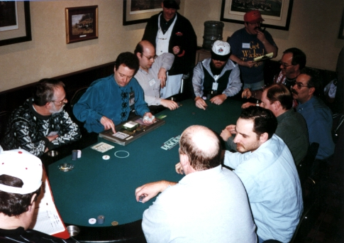

Home
Info
Register
Previous
2006
2005
2005
2004
2003
2002
2001
2000
1999
1998
1997
1996
Feedback
|
The first meeting of ATLARGE took place at the Resorts Casino Poker Room in Atlantic City from Friday, March 29 through Sunday, March 31, 1996.
The participants of ATLARGE wish to thank the Resorts Casino Poker Room, Jerry Bear, and his entire staff for thier excellent hospitality over the weekend, for their work in organizing the events, and for an all-around super job as our hosts for the weekend. Thank, you!
Thanks also Jazbo Burns for his tremendous effort in working with Mr. Bear and Resorts in organizing this event, and to Kennedy "K-man" Lemke for running the original ATLARGE web site and mailing list.

Results
| No-Limit Hold'em - (See full bustout list) |
|---|
| 1st |
Peter Secor |
$1026.00 |
| 2nd |
Jerry Gerner |
$459.00 |
| 3rd |
JP Massar |
$270.00 |
| 4th |
Stephen Smith |
$216.00 |
| 5th |
Jeremy Miller |
$189.00 |
| 6th |
Jeff Woods |
$162.00 |
| 7th |
Paul Filipski |
$135.00 |
| 8th |
Jim Strydio |
$108.00 |
| 9th |
Russel Rosenblum |
$81.00 |
| 10th |
Richard Sooy |
$54.00 |
| Seven Card Stud - (See full bustout list) |
|---|
| 1st |
Ross Poppel |
$1200.00 |
| 2nd |
JP Massar |
$600.00 |
| 3rd |
Mitch Kramer |
$240.00 |
| 4th |
Tiger |
$168.00 |
| 5th |
Joe Luca |
$120.00 |
| 6th |
Julius Del |
$72.00 |
Trip Reports
Photos (thanks to Kennedy "K-man" Lemke)
No-Limit Hold'em Tournament

NLHE final table: Rear: Steve Smith, Paul Filipski, Jeff Woods, Jim Strydio, Russell Rosenblum, JP Massar, Richard Sooy, Jeremy Miller. Front: Jerry Gerner, Peter Secor.
|

Jerry Gerner (winner), Peter Secor (2nd), JP Massar (3rd)
|

Jerry Gerner, Peter Secor, Jazbo Burns, and JP Massar
|

Winner: Peter Secor
|

2nd Place: Jerry Gerner
|

3rd Place: JP Massar
|
Stud Tournament

Stud Top 3: JP Massar, Ross Poppel, Mitch Kramer
|

Winner: Ross Poppel
|

2nd Place: JP Massar
|

3rd Place: Mitch Kramer
|

4th Place: Tiger
|
|


{kind=link}
{kind=link}
{kind=link}
{kind=link}
{kind=link}